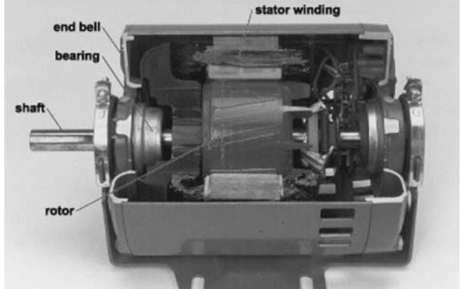

An instramental for ya
This section of the portfolio highlights the knowledge and practical skills I developed during the course Single Phase Motors. Its purpose is to demonstrate my understanding of the operation, wiring, and safe installation of single phase motors, as well as related equipment such as synchronous motors, alternators, and generators. It includes photos, videos, and written explanations of the practical work completed, showing my ability to identify components, interpret wiring connections, and apply correct installation and safety procedures. Overall, this section reflects my competence in working with single phase motor systems and basic power generation equipment safely and effectively.
Fig 1.3:Centrifugul Switch for Single Phase Motor

Fig 1.4:Mechanical Components of a Single Phase Induction Motor
| Item.No | Descfiption | Quality | Quantity |
|---|---|---|---|
| l | Single phase motor | Good | 1 |
| 2 | Wire Stripper | Good | 1 |
| 1 | Flat head screwdeiver | Good | 1 |
| 4 | Phillip head screwdriver | Good | 1 |
| 3 | NO push button | Good | 1 |
| 3 | NC pushbutton | Good | 1 |
| 2 | Contactor | Good | 2 | <
| 1 | Circuit Breaker | Good | 1 |
Each component in the circuit serves a specific function, where motors provide mechanical output, contactors control the switching of power, overload relays offer protection against excessive current, and control devices such as push buttons allow safe operation of the system. The design also follows relevant electrical codes and industry standards through the correct selection of cable sizes, proper earthing, and the use of appropriate protective devices to ensure safe and reliable installation. For wet or damp environments, weatherproof enclosures, sealed fittings, and suitable conduit systems were used to prevent moisture ingress and reduce the risk of electrical faults. The layout and enclosure choices were made with practicality in mind, ensuring easy access for operation and maintenance while also protecting equipment from damage and improving overall safety and efficiency.
Improved design features;
Safe wiring practices include using correctly sized cables, proper insulation, secure conduit installation, and effective grounding. PPE such as insulated gloves, safety boots, and safety glasses should be worn at all times. Lockout/Tagout procedures must be followed by isolating and securing the power supply before work begins. Protection against shock, short circuits, and overloads is provided through proper grounding, circuit breakers, fuses, and overload relays. In wet locations, IP-rated enclosures and sealed connections should be used. These practices follow standards such as those from the International Electrotechnical Commission and guidelines similar to the National Electrical Code.
This module successfully demonstrated the practical application of magnetic starters in industrial motor control. By integrating thermal overload protection and electrical interlocking, I ensured the system operates within safety parameters while preventing short circuits during phase reversal. This reinforces my ability to interpret complex industrial schematics and execute precise control wiring.